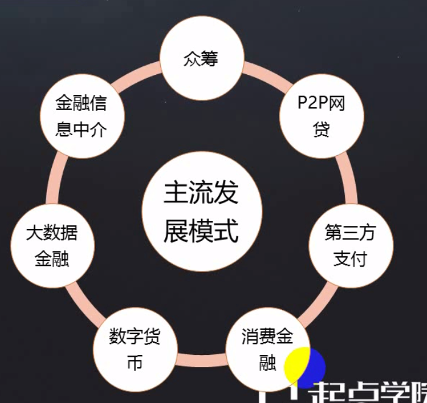

一、循环授信业务模式
1.互联网金融：传统金融机构与互联网企业利用互联网技术和信息通信技术实现资金融通、支付、投资和信息中介服务的新型金融业务模式

2.资金的搬运工，让资金流转起来
3.P2P点对点的借贷
4.大数据金融：反欺诈、风控
二、消费金融基本术语
1.消费金额：指向各阶层消费者提供消费贷款的现代金融服务方式

2.消费：资金用途为消费，有别于现金贷款，主要包括个人耐用消费品贷款（大额）及一般用途个人消费贷款（小额）
3.金额：由金融机构提供纯信用贷款，以小额、分散为原则，无抵押、无担保（区别于房贷）
4.场景：基于消费场景 ，如购物、购车、旅游、租房、美容等
5.基本模式图

- 购买关系：发生在商家与消费者之间
- 借贷关系：发生在金融机构与消费者之间
- 资金关系：发生在金融机构与商家、金融机构与消费者之间
三、现金贷与商品贷
1.循环授信模式：一次授信，多次使用；

- 金额机构基于对消费者个人的信任，包括购买能力、还款能力、还款意愿的信任，给予消费者特定的信用额度 ，使之购买时可用额度进行支付 （代替现金支付）。额度可循环使用，支付时减少，还款时增加
2.循环授信商品贷业务过程图解

3.授信申请——白名单模式，拥有数据优势的公司一般采用

4.信审：非白名单模式下的必须环节，核心目的是审核用户资料的真实性、信用状况、评估还款能力主欺诈风险。存在自动审批与人工审批两种类型
- 自动审批：以大数据为基础，建立风险指标与风控引擎，将用户申请资料作为输入，经过风控引擎后输出风险评估结果，确定审批是否通过
- 人工审批：以风控政策及信审制度为基础，结合信审人员经验，对用户进行风险评估，确定审批是否通过
- 自动+人工审批：先基于风控引擎进行自动审批，审批通过的再进行人工审批
5.用信支付：用户使用已获得的额度进行购物支付，额度支付依赖于互联网技术，主要集中在网上商城（如白条、花呗），部分已覆盖线下消费场景（京东闪付）
6.资金结算：消费金额商品贷模式下，一般采用受托支付，即贷款资金不会直接给到消费者，而是由金融机构基于订单交易数据，定期结算给商家，确保了资金的用途

7.用户还款：用户获得商品或服务的同时，金融机构将产生对应的借据及还款计划，用户需按还款日分期给金融机构支付还款金额
- 委托金融机构自动代扣：用户开通银行卡快捷支付功能，授权金融机构在还款日自动划扣应还款额，用户只需确保代扣银行卡余额充足，无需进行任何操作，如花呗帐单
- 主动还款：用户在还款日之前，在金融机构提供的互联网平台，主动选择帐单及支付银行卡，支付应还金额至金融机构
8.循环授信——现金贷

9.现金贷与商品贷的异同：
- 1）相同点：授信申请与信审流程基本相同，只是授信申请的提交的资料及信审的审核指标及标准会存在差异
- 2）差异点：
- 无用信支付环节，用户在线上直接进行提现，金融机构即向用户指定银行账户支付资金；故也不存在与商家进行资金结算环节；
- 资金用途不受限，商品贷则限制在消费场景上
四、京东白条与金条实例解析
1.白条

2.金条

五、授信申请流程
1.授信申请流程-白条

2.签署协议：满足互联网金融监管的合规要求，声明金融机构与用户的关系、权利及义务，明确全部收费项目和条件，以此作为对双方具有约束力的法律条文

3.实名认证：核实用户真实身份，防止盗用他人身份信息进行恶意欺诈

4.腾讯云人脸核身流程

5.银行卡核验

六、信贷审批流程
1.信贷审批

2.自动审批漏斗模型

3.自动审批-准入规则

4.自动审批-评分卡规则：对满足准入规则的用户，通过指标量化进行评分，关键点是建立建立科学合理的评分指标及评分规则


5.自动审批-优质客户标签

6.人工审批
- 有自动审批作为参考：依据“自动审批评分及风险提示+用户提交的信息+电核+信贷审批政策+审核人员经验”确定审核结果
- 无自动审批作为参考：依赖“用户提交的信息+电核+信贷审批政策+审核人员经验”确定审核结果

七、用信支付流程
1.线上商城的用信支付流程

2.线下门店的用信支付流程

3.分期试算

4.签署借款合同：
- 合规且具备法律效应的贷款合同是需要借贷双方签名盖章，线上电子合同的签署一般通过电子签单替代传统的签名盖章。电子签单的签署需要专门引入具有行业资质且受法院认可的服务商，如上上签、云签等
- 消费金融行业里，因消费具有小额、高频的特征，很多平台省去了此环节，如京东白条、唯品花、花呗等均无需签署
5.生成借据及还款计划

八、贷款核算流程
1.贷款核算流程
- 1）贷款核算：指规划和实现贷款整个生命周期的现金流动。包括贷款发放、利息计算、利率调整、还款计划生成、贷款偿还或处置等，覆盖贷款的整个生命周期
- 2）贷款核算归纳起来主要做两件事
- 算：算利息、算罚息、算还款计划
- 记：清晰准确的记录每笔交易的过程及结果
2.贷款核算主要3个环节

3.常见的基础还款方式

4.一次性还本付息：当期利息=上一期剩余本金*年利率/360*(当期还款日-上一期还款日)

5.分期付息一次还本：当期利息=上一期剩余本金*年利率/360*(当期还款日-上一期还款日)

6.等额本金：当期利息=上一期剩余本金*年利率/360*(当期还款日-上一期还款日)

7.等额本息
- 期供=round(-pmt(用利率, 期数, 总金额), 2)
- 当期利息=上一期剩余本金*年利率/12
- 首期利息=一期的利息+多余天数的利息

8.核算记账：贷款从发放到偿清终结是一个漫长的过程，在这一过程中，会发生各种各样的操作和变化，金融机构必须完整的、连续的、系统的反映和记录每笔贷款。核算记帐使用复式记账法，通过会计科目、会计分录进行记账
9.复式记账法以“有借就有贷，借贷必相等”为记账规则
10.常见的银行一级会计科目：


九、贷后管理流程
1.贷后管理流程

2.风险监控与风险预警：通过客户历史行为预测客户未来出现坏账的可能性。业内通常利用Logistic回归模型来开发

3.风险化解：事前预警、事前预防、事后补救

4.不良资产处置：指对逾期客户形成的呆账、坏账进行处置，优化公司资产结构，包括：
- 不良资产核销：指金融机构承担风险和损失，对符合认定条件的长期逾期本金和利息，按规定程序从账面上剔除的过程。财政部印发的《金融企业呆账核销管理办法》对呆账的认定、核销、管理和监督做了明确的规定
- 不良资产出售：指金融机构将不良资产通过打包出售给资产管理公司，是金融机构甩掉不良包袱的一种方式。购买不良资产的公司可通过打诉讼追偿、资产重组、出售等方式实现盈利
十、用户还款流程
1.主动还款：

2.自动（代扣）还款：

十一、商户结算流程
1.商户结算：是指金融机构（贷款主体）将用户购买商品或服务的货款，定期结算给商户，并进行财务记账的过程

2.流程关键点：

十二、业务对象与对象需求分解
1.消费者

2.金融机构

3.商家

4.从业务对象需求分解系统功能需求

5.进件=授信申请=提交证件的审批流程
十三、整体功能架构耦合关系设计
1.系统产品功能架构

十四、用户端功能板块规划
1.思路：先定义产品形态与功能模块，再做功能分解

十五、商户端功能板块规划
1.资金结算、交易订单详情
2.o2o模式的商家也可以下单（商家可支持分期的商品）
十六、公共平台功能设计
1.风险引擎

十七、信审模块功能设计
十八、核算模块功能设计
十九、贷后模块功能设计
二十、用户端APP原型核心界面设计
二十一、服务端APP原型核心界面设计